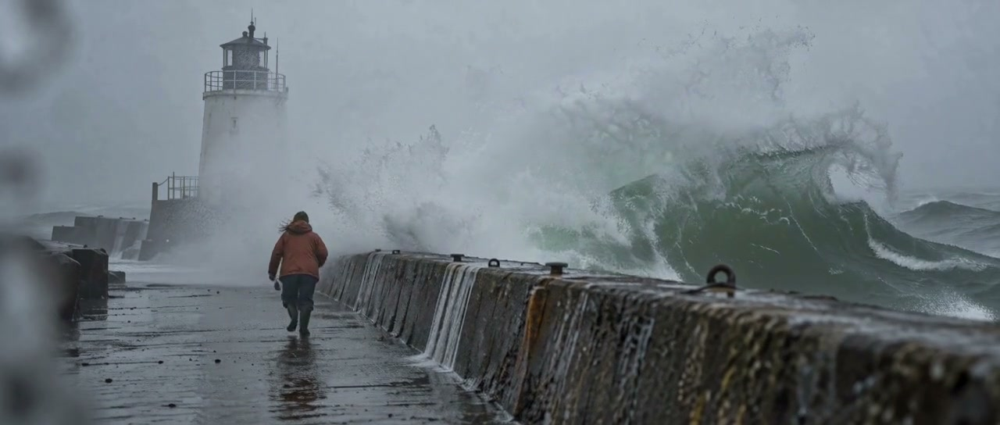
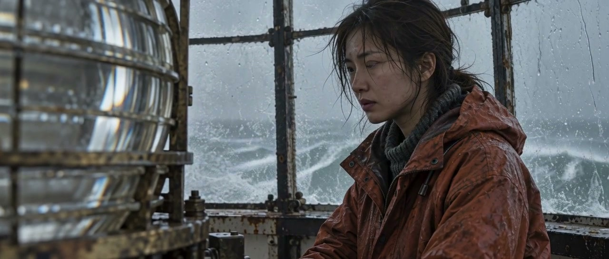
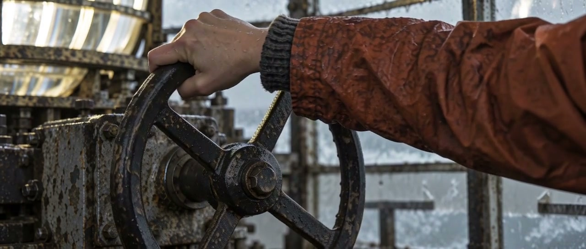
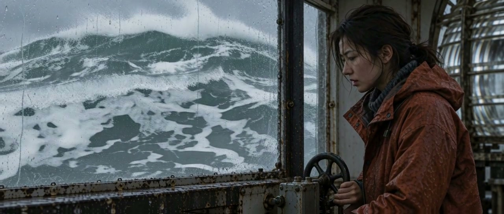
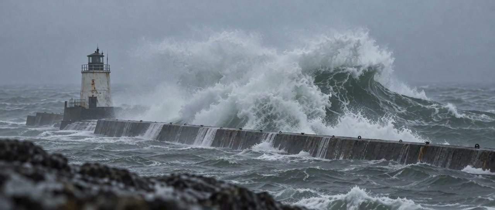
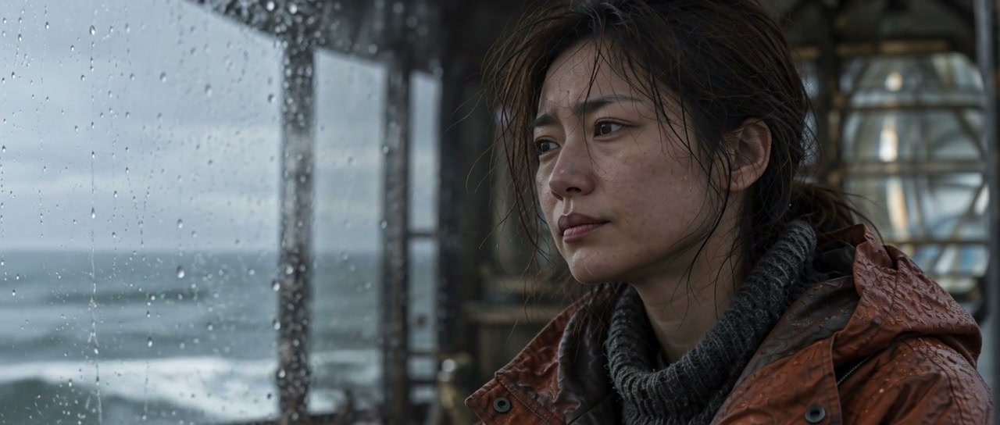

生成底片 / 正向运动
先得到人物动作、海水和静止窗框的完整镜头。
风暴正在靠近。
她转动手轮，让海水退回。
用同一座工作灯塔、同一件湿雨衣和阴天自然光建立空间。镜头从风暴、人物行动转向机械与水滴，再回到海面；让变化有起因，也有余波。






先对齐静止窗框，校正底片的轻微镜头漂移，再保留人物的正向动作，单独重组窗内海水的时间顺序。窗框作为合成边界；衣袖、手轮与海浪由此可以在同一画面里沿不同方向发生。
先得到人物动作、海水和静止窗框的完整镜头。
人物保留正向运动，窗内海水采用逆向时间。
原创关键帧锁定人物、服装、建筑、机位与天气。保留海雾、遮挡、景深和曝光取舍，让画面有真实摄影的限制。
通过 ComfyUI / H3 生成动态镜头；对浪涌使用首尾帧约束，检查人物步态、手与机械接触，以及固定结构是否漂移。
剪辑、局部时间反转与环境音混合共同完成叙事。风暴声在变化前退下，水声和机械声再将动作连接起来。